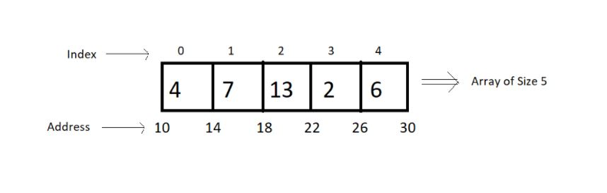

ADTs or abstract data types are the ways of classifying data structures by providing a minimal expected interface and some set of methods.
- ADT
- Minimal required functionality
- Operations
Arrays - ADT
An array ADT holds the collection of given elements (can be int, float, custom) accessible by their index.
1- Minimal required functionality:
We have two basic functionalities of an array, a get function to assign an element to some index in the array.
- get(i) → get element i ☆ in C → arr[i]☆
- set(i,num) → set element i to num. ☆ in C → arr[i] = "some value" ☆
2- Operations
We can have a whole lot of different operations on the array we created, but we'll limit ourselves to some basics ones.
- Max()
- Min()
- Search (num)
- Insert (i,num)
- Append (x)
Static and Dynamic Arrays:
- Static Arrays → Size cannot be changed.
- Dynamic Arrays → Size can be changed
Memory representations of arrays:

- Elements in an arra are stored in contigous memory locations.
- Elements in an array can be accessed using the base address in constant time → O(1)
- Although changing the size of an array is not possible, one can always reallocate it to some bigger memory location. Therefore resizing in an array is a costly operation.